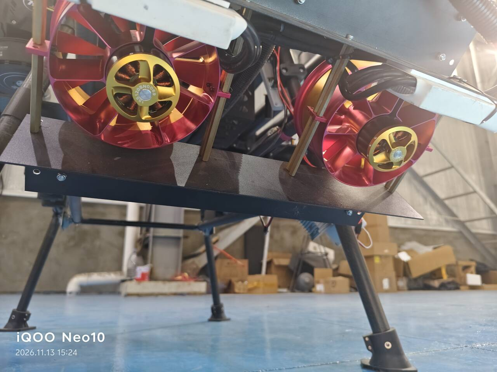

结构定下来之后，剩下的是"怎么把一句话说清楚"。 这一篇全在协议层：一条消息怎么同时改两路的输出、 那几个看起来像魔法数字的枚举值分别是什么、 以及一个让我以为"遥控器坏了"的接口变更。
一、先弄清这几组数字
PX4 里 AUX 口的功能是靠 PWM_AUX_FUNC1 … PWM_AUX_FUNC9
这组参数指定的，每个口一个，值是枚举。和这次任务有关的只有三个：
| 值 | 含义 | 什么时候用 |
|---|---|---|
0 |
Disabled | 空闲。配了 RC AUX n 但没接通道的那种"死口"，实际等价于这个 |
409 |
RC AUX n（遥控器直通） | 出厂默认。摇杆 → 飞控 → 该口，板子插不上手 |
302 / 303 |
Offboard Actuator Set 2 / Set 3 | 把该口交给"外部指令通道"，板子发 DO_SET_ACTUATOR 才能控制它 |
这里有个容易看错的地方：数字的后两位和 Set 编号是错位的。
302 是 Set 2，303 是 Set 3，
那 301 是 Set 1——不是 Set 3。
我盯着 QGC 那个下拉菜单看了半天才确认，因为菜单里写的是
"Peripheral via Actuator Set 2"，而数值列显示 302，
两个数字长得太像，很容易选错一行。
PWM_AUX_FUNC* 只在飞控启动、初始化 PWM 输出通道的时候读一次。
在 QGC 里点保存，参数确实写进 flash 了，但对已经在跑的定时器没有任何影响。
这点很坑：参数页显示新值、界面看起来"已生效"、实际输出还是老逻辑。
判断方法只有一个——重启后重新读一遍，或者看 probe 的输出。
二、一条消息，六个槽位
MAV_CMD_DO_SET_ACTUATOR（命令号 187）的结构很朴素：
七个参数，前六个是六路输出的目标值，第七个是"这次改哪一组"。
COMMAND_LONG command = 187 (MAV_CMD_DO_SET_ACTUATOR) param1 = 输出 1 的归一化值 → Set1 param2 = 输出 2 的归一化值 → Set2 param3 = 输出 3 的归一化值 → Set3 param4 = 输出 4 的归一化值 → Set4 param5 = 输出 5 的归一化值 → Set5 param6 = 输出 6 的归一化值 → Set6 param7 = 索引（0 = 全部）
关键是值的类型：归一化的浮点数，不是脉宽。
约定是 -1.0 对应该口的 MIN、0.0 对应中点、
+1.0 对应 MAX。所以真正发出去的是"比例",
具体变成多少微秒由飞控按该口的 MIN/TRIM/MAX 去换算：
| 想让它 | 发什么 | AUX3（1000/1300/1600）实际输出 | AUX2（1000/1500/2000）实际输出 |
|---|---|---|---|
| 最低 | -1.0 | 1000us | 1000us |
| 中点 | 0.0 | 1300us | 1500us |
| 最高 | +1.0 | 1600us | 2000us |
| 中间某值 | 按比例插值 | 线性对应 | 线性对应 |
注意两个口的"中点"不是一个数：AUX3 的中点是 1300，AUX2 的中点是 1500。
因为风扇那一路当初按 1000–1600 配的（行程只要 600us 就够吹），
伸缩杆那一路是标准舵机范围 1000–2000。
同一个 0.0 在两个口上输出不同微秒——归一化是相对于各自的 MIN/MAX 的，
这点如果没想清楚，调一路的时候会把另一路带歪。
NaN 表示"这一路别动"。
六个槽位里，填 NaN 的那个输出保持上一次的值不变。
这条语义是整个方案能"一条消息控两路"的基础：
我用同一个循环同时算两路的目标，一路填风机、一路填杆，
中间没有"先改这个再改那个"的时间差。
两路永远在同一个时钟拍上变化，不会出现风扇已经加速、杆还停在老位置的错拍。
三、把连续值压成三档，是在客户端做的
风扇是连续量，直接算归一化就行。杆不是。 杆的驱动器只认三个脉宽，而遥控器给的是连续行程 （实测 CH6 是 1050 → 1500 → 1950，中间还有抖动）。
飞控不做这个量化——它只会老老实实按比例插值。 所以 1130us 会被它算成一个"介于低档和中位之间"的输出， 而驱动器收到这个值之后的行为，是它自己的事，不是你的事。
量化必须放在发之前。实测区间这么定：以 1500 为中心，±200us 判为"中位"， 超出就判到两端：
rod_out = 1000.0 if rod_pwm < 1500 - 200 else \
(2000.0 if rod_pwm > 1500 + 200 else 1500.0)
这个 ±200 叫死区。它的作用不是"容错"，是让中位真的能停住—— 遥控器松手回中时，机械回弹不一定精确落在 1500， 实测经常是 1492、1508 这种。没有死区的话，杆会在"低档"和"中位"之间来回跳， 表现出来就是松手后杆子还在抽动。
| 遥控器 CH6 实测 | 判定 | 下发给 Set2 | 驱动器收到 |
|---|---|---|---|
| 1050 | 低档（< 1300） | -1.0 | 1000us |
| 1300 – 1700 | 中位（停） | 0.0 | 1500us |
| 1950 | 高档（> 1700） | +1.0 | 2000us |
实测 1050 和 1950 都不是"标准值"，但它们离边界很远，量化后落在正确的档位上。 这就是量化的好处：输入不精确，输出精确。
四、那个让遥控器"推不动"的坑
做到一半的时候出现过一个很怪的现象：板子上能看到飞控的状态（mode=LOITER 之类），
但读不到任何一个遥控器通道的值。遥控器明明是通的，QGC 里摇杆也在动。
原因是一行看起来很正常的初始化代码：
master.mav.request_data_stream_send(
master.target_system, master.target_component,
mavutil.mavlink.MAV_DATA_STREAM_RC_CHANNELS, 10, 1)
这个接口是 MAVLink 1 时代的东西，PX4 1.16 已经不再响应它了。
请求发出去不报错、不返回失败，就是什么都不会发生——
于是 RC_CHANNELS 一帧都不来。
正确的做法是改成按消息 ID 订阅，并且定期重发：
master.mav.command_long_send(
master.target_system, master.target_component,
mavutil.mavlink.MAV_CMD_SET_MESSAGE_INTERVAL, 0,
mavutil.mavlink.MAVLINK_MSG_ID_RC_CHANNELS,
100000, # 100000us = 10Hz
0, 0, 0, 0, 0)
这里有两个细节，都不是可选的：
- 要定期重发。 飞控重启、链路重连、或者内部状态刷新，都可能把这个订阅清掉。 我的做法是每 3 秒重发一次，另外加了个 8 秒没收到就打印告警的看守。
-
单位是微秒，不是赫兹。
100000是"每 100ms 一帧"，也就是 10Hz。 填10会被理解成"每 10 微秒一帧"，飞控要么忽略要么按上限截断， 反正不是你想要的频率。
五、端口只能被一个人占用
还有一个和协议无关、但一定会撞上的问题：
[连接] udpin:0.0.0.0:14540
udpin 意味着这个进程在本地 14540 上开了监听。
一个 UDP 端口只能被一个进程绑定，所以：
- 服务在跑的时候，手动再起一个实例 → 直接绑定失败；
- 手动实例在跑的时候，
systemctl start→ 服务起来了但连不上飞控，报"收不到心跳"。
这个约束逼出了后面的两个设计：双路必须写在同一个进程里（不能一个脚本管风扇、一个管杆）， 以及没有终端的时候怎么下指令——那是第四篇的内容。
另外飞控在以太网上不主动往板子广播心跳。光监听是等不到的， 必须预设对端地址、自己先往那边发心跳，把链路"叫醒"：
[连接] 预设对端 10.41.10.2:14540，主动发心跳（绕开飞控广播失败） [连接] 已连上 sysid=1 compid=0
这里的 10.41.10.2 是飞控在内部网段上的地址，
和板子 wlan0 的 192.168.110.180 不是一个网段——
前者是 eth0 直连飞控的口，后者才是你 SSH 上来的口。
这两个地址我混过一次，代价是十几分钟的 scp 超时排查。
六、两路一起动，怎么确认没互相踩

双路同时下发之后，我盯的是这样一种日志：
[AUTO] CH11=1050us -> 输出 1000us 自治 1000us (板子设定中…) 27.0s | CH6=1950us -> 伸缩杆 1500us [高档] 🔒超时保护中
这一行里同时有三层信息，正好可以用来验收：
| 看哪一段 | 说明什么 | 不正常的样子 |
|---|---|---|
CH11=1050 → 1000us |
风扇这一路仍在正常读遥控器、正常输出 | 风扇输出跟着杆的档位变化 → 两路串了 |
CH6=1950 → [高档] |
杆这一路读到了正确的档位 | 档位判定在中位和低档之间乱跳 → 死区太小 |
伸缩杆 1500us + 🔒 |
读到了高档，但输出被压回中位——保护优先级高于摇杆 | 读高档就输出 2000us → 保护没生效，杆会一直顶着限位 |
第三行值得停一下：日志里"输入"和"输出"是分开显示的，这是故意的。 如果只打最终输出，就看不出"是谁把它改成这样的"—— 是摇杆让它回中，还是保护让它回中？这两种情况在排障时结论完全相反。
七、这一层的四条结论
-
归一化不是脉宽。 同一个
0.0在不同口上输出不同微秒， 因为它是相对于各自 MIN/MAX 的比例。 -
NaN是"别动这一路"。 这是能一条消息控多路的前提， 也是让两路永远同拍的手段。 - 量化要在客户端做。 飞控只会插值，它不知道你的驱动器只认三个值。
- 订阅式接口要重发，单位是微秒。 调用不报错不代表有数据。
协议这一层通了，接下来是真正麻烦的部分：当遥控器和板子同时想控的时候，听谁的。 这一块我前后推翻过三次，下一篇写它。